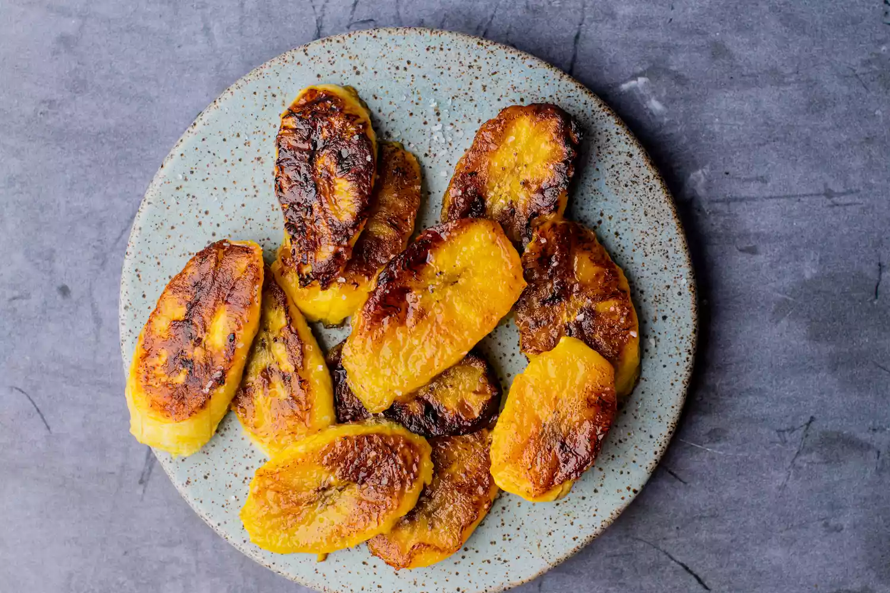

Fried Plantain

A healthy snack or dessert for any time of the day
- Prep Time: 4 minutes
- Cook Time: 5 minutes
- Serves: 1-2
Ingredients:
- 2 ripe plantains
- 2 to 3 tablespoons oil (such as canola or vegetable oil), for frying
- Sea salt (optional)
Directions:
- Peel plantains by cutting off both ends, and cutting a slit down the side of each plantain.
- Remove the plantain peel by peeling it side to side rather than lengthwise. It will come off in sections. You may need to use the knife at the edge of each section to help loosen it from the flesh.
- Cut the peeled plantains into 1/4-inch-thick slices. Diagonally is preferred because it provides a larger surface for caramelization; it can be cut straight across into rounds.
- Drizzle just enough oil into a skillet to coat the bottom of the pan, and place it on medium heat.
- Remove plantains from the pan and drain on paper towels.
- Continue frying in batches until all the plantains are fried.
- Sprinkle lightly with sea salt to give a sweet and salty taste to your fried ripe plantains.
Return to top
Return to main page